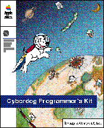

Legacy Document
Important: The information in this document is obsolete and should not be used for new development.
Important: The information in this document is obsolete and should not be used for new development.


Cyberdog Programmer's Kit
Cyberdog is the compelling new Internet-access technology that gives Macintosh users flexible and extensible access to the World Wide Web, news groups, e-mail, and many other network services.
Cyberdog is a complete modular architecture for integrating existing and future network protocols and services into a unified experience for the Internet user. Cyberdog's modularity comes from its basis in OpenDoc; as a developer, you can enhance or extend Cyberdog simply by creating Cyberdog-aware OpenDoc components.
The Cyberdog Programmer's Kit describes how you can create these components. The book contains an overview of the Cyberdog architecture, code examples and tutorial steps illustrating how to create Cyberdog components, and a complete reference to the C++ classes and methods that make up the Cyberdog programming interface.
See the addendum Creating a Cyberdog Service for additional programming examples.
Availability: Click below to obtain Cyberdog Programmer's Kit in any of the following formats.
Book Contents
- Figures, Tables, and Listings
- Preface - About The Programmer's Kit
- Part 1 - Basics
- Chapter 1 - Introduction to Cyberdog
- Chapter 2 - Development Overview
- Part 2 - Programming in Cyberdog
- Chapter 3 - Adding Cyberdog Features to an OpenDoc Part
- Chapter 4 - Creating a Cyberdog Display Part
- Chapter 5 - Embedding a Cyberdog Display Part in a Navigator
- Part 3 - Cyberdog Reference
- Chapter 6 - Types, Constants, and Global Functions
- Chapter 7 - Classes and Methods
- Glossary